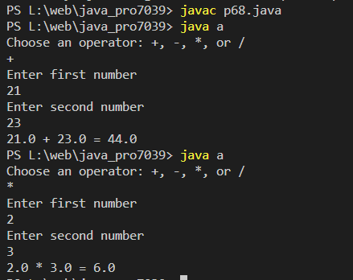

Write a Java program to create a simple calculator
Code:-
import java.util.Scanner;
class a
{
public static void main(String[] args) {
char operator;
Double number1, number2, result;
// create an object of Scanner class
Scanner input = new Scanner(System.in);
// ask users to enter operator
System.out.println("Choose an operator: +, -, *, or /");
operator = input.next().charAt(0);
// ask users to enter numbers
System.out.println("Enter first number");
number1 = input.nextDouble();
System.out.println("Enter second number");
number2 = input.nextDouble();
switch (operator) {
// performs addition between numbers
case '+':
result = number1 + number2;
System.out.println(number1 + " + " + number2 + " = " + result);
break;
// performs subtraction between numbers
case '-':
result = number1 - number2;
System.out.println(number1 + " - " + number2 + " = " + result);
break;
// performs multiplication between numbers
case '*':
result = number1 * number2;
System.out.println(number1 + " * " + number2 + " = " + result);
break;
// performs division between numbers
case '/':
result = number1 / number2;
System.out.println(number1 + " / " + number2 + " = " + result);
break;
default:
System.out.println("Invalid operator!");
break;
}
input.close();
}
}
Output:-
